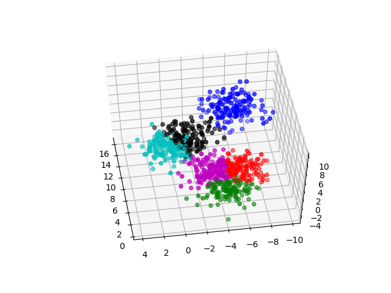

Jennifer Liu's Personal Site
A website showcasing my work
Projects
Using Data Mining Techniques to predict when car stops, and turns
We were given a set of GPS data, and were asked to predict when a car
stopped due to a stop sign or traffic light, and when a car turned left or right. Additionally, the GPS data was made of many paths, to eliminate the clutters, K-Means was used to agglomerate paths and remove issues related to dilution of precision.
Methods Used: DBScan, K-Means, Decision Tree Metholodigies
Teammates: Joe Golden, Niccolo Dehicchio
Link to Paper:
Making Predictions with Vehicle's GPS Data
Link to Github:
GPS Predictions Github
Using Word Embedding to automate Recipe Replacement
In this project, we explore the possibility of creating a model that can identify replacement for an ingredient. For instance, if the query was butter, it should discover that margarine is similar to butter, so that is 1 potential replacement. The applications for this are numerous: along with aiding individuals with allergies and dietary restrictions, this can also help cooks understand how to use ingredients they already have. The idea is to transform ingredients into embeddings. With ingredients represented as embeddings, cosine similarity can be used to find the closest replacement.
Paper Available Below:
Using Word Embedding to Automate Recipe Replacement Research Paper
Link to Github
Research Github
Predicting language of text (Dutch/English) using Decision Tree and Adaboost
I chose 8 features when making the the Decision Tree. The features used are detailed
in the paper. The decision tree is also written from scratch (i.e does not use sci-kit learn). The classifier has a 99% accuracy. Details about the training and testing data are available in the paper
Link to Paper:
Language Prediction using Decision Tree and Adaboost
Link to Github:
Language Prediction Github
Implementation of Fundamental Data Mining Concepts from Scratch
Concepts implemented include:
- Agglomeration (Agglomerated locations on a map)
- Otsu's Method (Used method to find best car speed when considering whether someone is speeding or not)
- PCA (Projected 120 dimension data onto 3 dimension)
- KNN (Used KNN to classify differnt types of shoppers at a grocery store)
- K-Means (performed k-means on carefully constructed data)
All implementations are compiled in this github link:
Fundamental Concept Implementations
K-Means Result
K-Means Github Code

Agglomeration Result on random map locations
Agglomeration Github Code

PCA Visual Results
PCA Github Code
First, we agglomerated the data points. Then, we used PCA to project 120 Dimensional data to 3D data point. After projecting it, we were able to visualise it as a 3D plot

LIUEC Management Tool V2
A webpage for my father's chinese medical clinic. Due to confidentiality
issues, the webpage cannot be shared on this site
Functions:
- Create calendar appointment
- View patient's information. (i.e patient appointment history,
patient medication records)
- Upload patient medical records
- Message Board: Allow internal workers to inform each
other about important details
Prototyped a E-Wallet System for Octopus (A company based in HK)
In Hong Kong, Octopus is a major means of payment for many of us, especially on a subway. Octopus is considered a FinTech company in Hong Kong. In was originated to allow consumers to pay using an RFID based card. This payment is available in many different places such as grocery stores, subway etc…
I created a prototype version demonstrating how Octopus can be transformed from being a RFID to a NFC based card. In other words, transforming Octopus to be an E-Wallet system. However, I did not realize that they had already built something similar and far better than what I could envision. Despite my lack of research on this matter, they were kind enough to invite me to their headquarter for a visit and taught me a lot about their design and factors they had to consider while building such an e-wallet system.
Technologies Used
- NFC/RFID Adafruit Shield
- Arduino Board
- Android Development (Java)
- Flask for API
- SQL for DB
Below is a paper describing the implementation, logistics, and technological consideration of this project
Demonstration of Prototype
Octopus E-Wallet System Demo from Jennifer on Vimeo.
SMIF (Smart Meals Intelligent Fridge)
Teammates: Harshvardhan Gupta, Kyaw Khant Nyar, Robert Aguilera, Christine Van, Candy Wang
1st Prototype has been completed.
Created an IOT device that will address 2 problems (Wasting food and Eating Unhealthy). We called it SMIF. It stands for Smart Meals, Intelligent Fridge.
It does several things:
- Keeps track of what you eat
- It gives you information about the food in your fridge (i.e Calories/Serving, Fat)
- It suggests recipe based on what is available on your fridge
- It notifies you when food when food is about to go bad.
More details can be found:
SMIF Drive Folder

Demonstration of Prototype
Technologies Used
- AWS
- Swift 3
- BeautifulSoup Python Library for Web Scraping
- Python, Tensorflow (Image Prediction)
- PHP
- MySQL